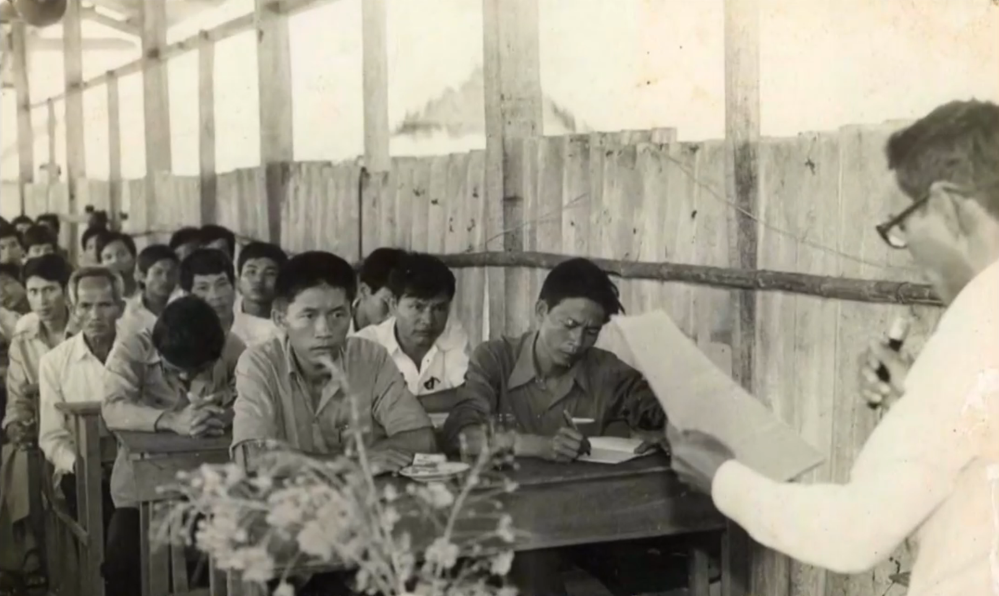

/
Quay Lại
GIỚI THIỆU CHUNG
-Vô cùng vinh dự và tự hào khi trường THPT Tân Bình tọa lạc tại một vùng đất giàu truyền thống yêu nước và cách mạng - vùng đất chiến khu D. Địa danh Cổng Xanh- Bông Trang-Nhà Đỏ cũng đã đi vào trang sử nước nhà trong cuộc kháng chiến chống Mĩ của dân tộc. Nhìn ngôi trường bề thế khang trang tại nơi đây, ít ai biết đến sự ra đời và trưởng thành của ngôi trường này trong chặng đường suốt 40 năm qua với 4 lần đổi tên trường, 3 lần chuyển vị trí từ những ngày đầu mới thành lập đầy vất vả khó khăn đến sự trưởng thành lớn mạnh hôm nay!
-Tiền thân của Trường Trung học phổ thông (THPT) Tân Bình là Trường phổ thông trung học (PTTH) – vừa học vừa làm (VHVL) Phước Sang đóng tại xã An Bình, huyện Đồng Phú, tỉnh Sông Bé (nay là xã An Bình, huyện Phú Giáo, tỉnh Bình Dương). Tiếp theo trường chuyển về Ngã ba Cổng Xanh, xã Tân Bình, huyện Tân Uyên, tỉnh Sông Bé (nay là huyện BTU, tỉnh BD) với tên mới là phổ thông trung học - kỹ thuật cao su Phước Hoà rồi PTTH Phước Hòa. Sau đó là Trường cấp 2,3 Tân Bình rồi đổi thành trường trung học phổ thông (THPT) Tân Bình tại địa điểm hiện nay.
-Nhân dịp kỉ niệm 46 năm thành lập (1978 - 2024), chúng ta hãy cùng nhau ôn lại những chặng đường đã qua của một ngôi trường có lịch sử 46 năm dù chưa phải quá dài so với những ngôi trường có lịch sử hàng trăm năm trên đất nước ta nhưng cũng đủ cho các thế hệ thầy trò chúng ta yêu quý gắn bó và tự hào.
-Với khuôn khổ hạn hẹp, Ban tổ chức khó có thể ghi lại đầy đủ những sự kiện, con người trong suốt 40 năm qua mặc dù chúng tôi đã cố gắng tìm hiểu và ghi nhận những dấu ấn đáng nhớ song những gì đã thực hiện vẫn còn là khiêm tốn so với bề dày truyền thống của nhà trường. Tự hào là những cựu học sinh của nhà trường nhưng thuộc lứa đàn em sinh sau đẻ muộn nên những hiểu biết của chúng tôi về nhà trường chưa thật đầy đủ. Chúng tôi rất mong nhận được sự góp ý chia sẻ và bổ khuyết.
QUÁ TRÌNH HÌNH THÀNH VÀ PHÁT TRIỂN
Trường THPT Tân Bình trải qua 46 năm hình thành và phát triển, chặng đường bốn thập kỷ qua có thể chia làm 03 giai đoạn:
1. Giai đoạn 1978 đến năm 1982
Trường Trung học phổ thông (THPT) Tân Bình thành lập trên tiền thân của Trường phổ thông trung học vừa học vừa làm (VHVL) Phước Sang được xây dựng và hoạt động vào tháng 5 năm 1978. Trường đặt tại địa điểm cạnh suối Giai (Bến Bà Mụ), ấp Phước Sang, xã An Bình, huyện Đồng Phú, tỉnh Sông Bé (nay là xã Phước Sang, huyện Phú Giáo, tỉnh Bình Dương). Trường được thành lập dựa vào sự tài trợ của Nông trường cao su Phước Sang. Người chọn địa điểm xây cất trường là ông Mười Răng (cán bộ Sở Giáo dục và Đào tạo tỉnh Sông Bé).
Đường vào trường chỉ là con đường đất dành cho xe trâu, xe bò đi lại, vào mùa mưa có nhiều sình lầy, mùa nắng thì nhiều cát bụi nóng. Qua hết đường đất, đến một cây cầu giã chiến bắc ngang qua kênh thuỷ lợi Suối Giai, được làm bằng những thân cây rừng đi rất gập ghềnh và trơn trợt. Mỗi khi cần đi về nhà thì tất cả cán bộ giáo viên, công nhân viên, học sinh phải đi bộ, băng đồng, lội qua đầm lầy, men theo lối mòn ngoằn ngoèo xuyên hết rừng lau sậy mới ra được đường lộ lớn để đón xe đò.
Ngôi trường được xây dựng bằng những thanh tre, tấm vách và nền làm bằng đất, có 6 phòng học, mỗi bên 3 phòng, phía trước là một cái sân rộng, có vài ba cây cổ thụ rợp bóng mát. Cơ sở vật chất ban đầu của nhà trường hầu như không có gì. Khó khăn bộn bề khó khăn, nhưng với lòng yêu nghề và khát khao tìm tri thức đã trở thành động lực to lớn giúp thầy và trò nhà trường vượt qua mọi khó khăn, thiếu thốn, quyết tâm “ươm mầm xanh” nơi miền đất khô cằn.

khai giảng năm học đầu tiên 1978-1979 vào ngày 20-11-1978 (Ngày Hiến chương Nhà giáo Việt Nam hiện nay) có một lớp 11 gồm 19 học sinh (4 học sinh nữ) và hai lớp 10. Trường chỉ có hơn chục thầy cô giáo ở khắp nơi được phân công về giảng dạy, thầy Trịnh Hữu Sắc quê ở Thanh Hoá là người Hiệu trưởng đầu tiên của trường. Đơn vị được nhà nước giao 6 ha đất có triền gò liền với ruộng và giáp Suối Giai (bến Bà Mụ) để canh tác. Nhằm thực hiện nguyên lí “Học đi đôi với hành, giáo dục kết hợp với lao động sản xuất” nên học sinh lúc này một buổi học văn hoá, một buổi lao động trồng khoai mì, lúa, bầu, đậu xanh, bí đỏ, ... nuôi cá , nuôi heo,... để cải thiện bữa ăn hàng ngày.
Mặc dù có những khó khăn nhưng Cấp ủy nhà trường lúc này quyết tâm chỉ đạo Ban Giám hiệu cùng các tổ chức đoàn thể duy trì tốt phong trào thi đua “dạy tốt, học tốt” phối hợp chặt chẽ với mọi nguồn lực để tập trung giáo dục toàn diện cho học sinh. Năm học 1979-1980 là năm học đầu tiên của trường có học sinh tham gia thi tốt nghiệp phổ thông trung học. Kết quả đỗ 100% trở thành nguồn động lực, quyết tâm cao cho thầy và trò trong những năm học tiếp theo. Hàng năm số lượng học sinh theo học tại trường tăng lên, tỉ lệ học sinh tốt nghiệp phổ thông trung học luôn được giữ vững đạt 100%. Trường rất tự hào với thành tích tốt nghiệp của học sinh và vui mừng hơn khi trong số học sinh đạt tốt nghiệp PTTH thủ khoa của tỉnh Sông Bé lúc này có tên học sinh trường là em Nguyễn Thanh Cần (năm học 1980-1981),…
Đến năm 1983 nông trường Phước Sang bị giải thể, nhà trường không có nguồn tài trợ chính nên mọi chi phí ăn ở, học phí của học sinh do gia đình và nhà trường tự lo. Đất canh tác đã bị thu hồi, không có công cụ lao động, không có tư liệu sản xuất mà chỉ có dạy văn hoá đơn thuần thì trường không thể tồn tại loại hình trường vừa học vừa làm nên nguy cơ “đóng cửa trường” rất cao. Trước tình hình đó, Ban giám hiệu đã tham mưu lên Sở Giáo dục Sông Bé để xin công ty Cao su Phước Hoà tài trợ để cho trường vừa học vừa làm Phước Sang được duy trì và phát triển bền vững.
2. Giai đoạn năm 1984 đến 1989
Trường THPT-VHVL Phước Sang sau khi giải thể được Công ty Cao su Phước Hoà nhận đỡ đầu hỗ trợ cơ sở vật chất và kinh phí học tập cho học sinh. Năm học 1984-1985, trường di chuyển về địa điểm mới và đổi tên trường là phổ thông trung học - kỹ thuật cao su Phước Hoà. Ngôi trường được xây dựng bán kiên cố tại cạnh đường ĐT 741, ngã ba Cổng Xanh, xã Tân Bình, Huyện Tân Uyên, tỉnh Sông Bé. Nhà ở, phòng làm việc, nhà kho,… cũng vẫn lợp mái bằng tranh, vách tre, chỉ có các phòng học (04 phòng cấp 4) được xây gạch, lợp fibro.
Trong thời gian này, đất nước ta gặp rất nhiều trở ngại về phát triển về kinh tế, đời sống cán bộ giáo viên và nhân dân gặp rất khó khăn. Học sinh lúc bấy giờ vẫn học buổi sáng, buổi chiều làm cỏ và phát chồi dại cho cây cao su của Công ty cao su Phước Hoà. Tuy nhiên càng khó khăn vất vả càng thôi thúc khát khao học tập của các thế hệ học sinh với đội ngũ nhà giáo kiên trì bám trường, bám lớp, đẩy mạnh phong trào thi đua “Hai tốt”, “Tất cả vì học sinh thân yêu”.
Năm học 1988-1989, nhà trường lại một lần nữa rơi vào tình cảnh khó khăn do chuyển đổi cơ chế từ bao cấp sang kinh tế thị trường, không còn hình thức VHVL mà trở thành trường PTTH bình thường cũng có nghĩa là không còn chế độ nội trú được nhà nước chu cấp cho mỗi em 13 kí gạo mỗi tháng như trước mà các em phải tự túc lương thực để ăn học. Nhiều em do hoàn cảnh gia đình khó khăn phải xin vào học trường VHVL nay giải thể đứng trước nguy cơ bỏ học, nhiều em chuyển trường về địa phương gần gia đình để học tiếp…( Phải nói thêm một đặc điểm của trường PTTH-VHVL Phước Sang và PTTH KTCS Phước hòa hồi đó là trường VHVL được nhà nước bao cấp nên ngoài đối tượng là học sinh địa phương (Tân Bình, Bình Mỹ, Phước Hòa, Hưng Hòa) do nhà gần trường theo học thì qui tụ rất đông các em ở nhiều địa phương khác như TP HCM, Tây Ninh, Tân Lợi, Đồng Xoài…(BP) theo học). Khi chuyển sang phổ thông thì trường cũng đổi tên là Trường PTTH Phước Hoà.
Trước những thách thức khó khăn, thầy và trò luôn thấm nhuần lời dạy của Bác Hồ “Không có việc gì khó, chỉ sợ lòng không bền…” càng quyết tâm hơn để đạt được mục tiêu của giáo dục. Thành quả của nhà trường nhiều năm liền vẫn được giữ vững: thi tốt nghiệp luôn đạt 100%, năm 1986 được xếp thứ II toàn quốc về tỷ lệ học sinh đậu đại học, cao đẳng; đội tuyển học sinh giỏi nhiều em tham gia và đạt giải cao cấp Tỉnh và cấp Quốc gia. Nhà trường được Sở Giáo dục Đào tạo xếp loại trường có tỉ lệ học sinh tốt nghiệp và học sinh giỏi cao trong tốp đầu của tỉnh.
3. Giai đoạn 1990 đến nay
Đến năm học 1989-1990, trường lại một lần nữa di dời về đường ĐT 747, ấp Cổng Xanh, xã Tân Bình, Huyện Tân Uyên, tỉnh Sông Bé (nay là Huyện Bắc Tân Uyên, tỉnh Bình Dương). Trường đổi tên là trường cấp 2, 3 Tân Bình. Trường được Sở Giáo dục và Đào tạo đầu tư xây dựng 4 phòng học cấp 4 tường gạch mái fibro và 1 dãy nhà văn phòng hiệu bộ sườn gỗ vách gạch không tô xi măng, mái lợp fibro. Nhà trường vận động kinh phí hỗ trợ thêm từ nhiều nguồn xây dựng thêm 3 phòng (nhà ở tập thể) bằng gạch không tô xi măng, nền đất và mái lợp bằng fibro dành cho cán bộ, giáo viên, công nhân viên nhà xa ở lại công tác.
Hàng năm số lớp học bắt đầu tăng lên, số lượng học sinh theo học ngày càng đông hơn, đội ngũ thầy cô giáo ngày càng nhiều thêm. Các thế hệ cán bộ, giáo viên, nhân viên Nhà trường luôn kiên trì phấn đấu, nỗ lực vượt qua mọi khó khăn, thử thách để hoàn thành xuất sắc mục tiêu giáo dục. Tất cả sẽ là nền móng vững chắc cho việc giáo dục đạo đức, lối sống nhân cách, kỹ năng sống cho học sinh, thúc đẩy phong trào dạy tốt học tốt, nâng cao chất lượng giáo dục trong nhà trường.
Đến năm 2001 trường được sự quan tâm của các cấp các ngành nên bắt đầu được xây dựng lầu hóa và hoàn thành vào năm 2002. Hiện nay, cơ sở vật chất của trường tương đối đầy đủ và khang trang với 27 phòng học chính thức dành cho hai cấp học (trường vẫn thuộc loại hình ghép cấp 2 và 3, có đầy đủ các phòng hiệu bộ, phòng chức năng, phòng học vi tính,… Đội ngũ cán bộ giáo viên và nhân viên hiện nay có 99 người với 41 lớp. Tổng số học sinh của cả hai cấp là trên 1510 học sinh.
